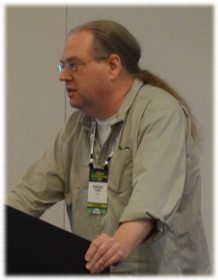

Persistent memory as remote storage
In a combined storage and filesystem session at the 2016 Linux Storage, Filesystem, and Memory Management Summit (LSFMM), Chuck Lever talked about using remote DMA (RDMA) for access to persistent memory. But, more generally, he was "soliciting feedback and rotten tomatoes" about what changes might be needed to make the various protocols and persistent storage classes/types work well together.

While he mostly discussed RDMA, Lever said that many of the same issues apply to other protocols, such as iSER and SRP at the block layer and SMB Direct and NFS/RDMA at the file layer. The performance equation for those protocols and fast persistent devices is such that the cost of making data durable may be less than that of the I/O to get the data to the device.
So, Lever asked, why marry slow technology to this new fast technology? Data replication for disaster recovery is one particularly good use case. It can be set up so that there are geographically diverse failure domains so that the data will be available for recovery. There are other use cases as well.
Today, Linux uses a "pull mode" to do I/O to remote targets, where the initiator exposes a region of its memory to the RDMA controller and sends a request to the target, which then uses that memory to complete the request. Once the initiator receives a reply, it invalidates the memory it exposed so it can no longer be accessed. For a read, the target simply places the data into the initiator's memory using an RDMA write. But for a write request, the target must do an RDMA read to the initiator to get the data to be written and await the response before it can write it. That means there is an additional round-trip for writes.
There are some advantages to pull mode, Lever said, including good memory security, since the initiator only exposes small amounts of memory and only for the duration of the request. In addition, the work to do the transfer is moved to the target side, leaving the CPU on the initiator available for application work. There are several downsides too, however. There is more than one interrupt for each request and the extra round-trip for write requests. In addition, the target CPU has to be involved in all requests.
The NFS server on Linux does not have zero-copy write—except for small I/O operations, as Christoph Hellwig pointed out. Lever said that RDMA could perhaps do zero-copy writes to get better performance. He asked: should splice() be used to do so? Hellwig replied that "splice() is really nicely over-hyped" and doesn't really help this kind of problem. He suggested that any I/O for a fast device should be using direct I/O to avoid the page cache.
For the future, Lever wondered about switching to a "push mode" instead. The initiator would register its interest in regions of a file and the target would expose memory for the initiator to use for read and write operations on those regions. It would return handles to the regions for the initiator to use; multiple RDMA read and write operations could be performed by the initiator before it informed the target that it was done. At that point, the handles would be invalidated (and the memory no longer exposed).
Ted Ts'o asked what the "security story" was for push mode. Lever replied that it uses "reliable connections" where there are only two peers. That connection is set up so that one side can view the other's memory based on the handles. Those handles are only valid for a single connection and the hardware guarantees that other endpoints can't interfere with the connection.
One problem is that there is no generic way to ensure that writes have reached durable storage for the remote storage protocols. Each operating system, network/fabric, and device has different durability guarantees and its own way to ensure that a remote write is stored safely. Sagi Grimberg suggested that code to ensure durability could be written once for all the different options and made available as a library, something like what DAX has. There was general agreement that there should be an API made available that hides the differences.
| Index entries for this article | |
|---|---|
| Kernel | Memory management/Nonvolatile memory |
| Kernel | RDMA |
| Conference | Storage, Filesystem, and Memory-Management Summit/2016 |